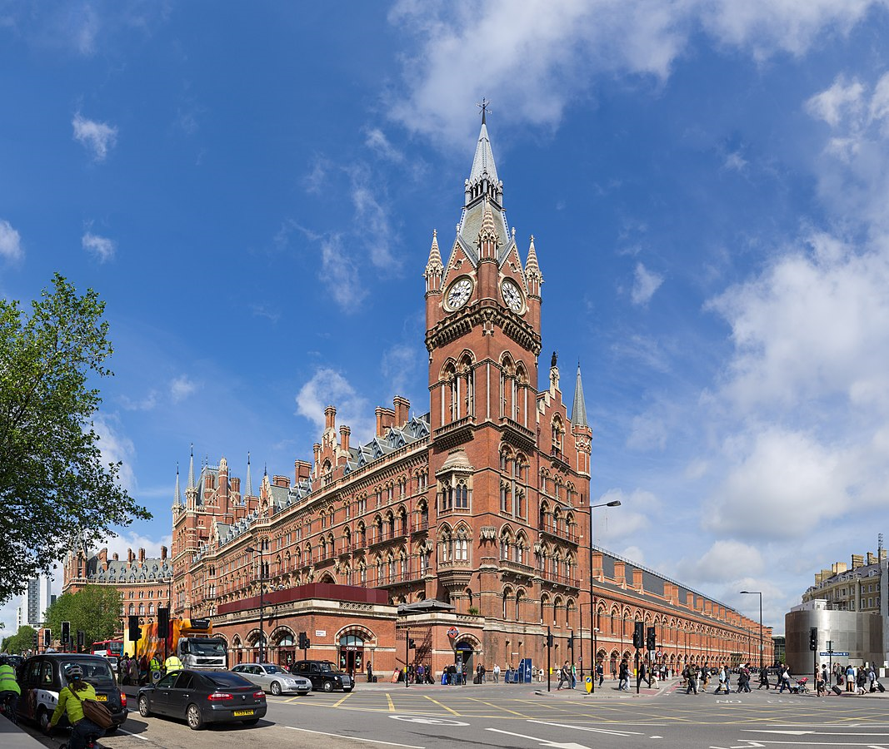

<!DOCTYPE html>
<html>
	<head>
		<meta charset="UTF-8" />
		<meta name="viewport" content="width=device-width, initial-scale=1" />
		<title>Carte des villes visités</title>
		<!-- Leaflet -->
		<link rel="stylesheet" href="lib/leaflet/leaflet.css" />
		<script src="lib/leaflet/leaflet.js"></script>
		<script src="lib/leaflet-fullscreen/dist/Leaflet.fullscreen.js"></script>
		<script src="data/pays.geojson"></script>
		<script src="lib/leaflet/Google.js"></script>
		<script defer src="https://maps.google.com/maps/api/js?v=3&sensor=false"></script>
		<style type="text/css">
			#map {height : 615px;}
		</style>
	</head>
	<body>
		<div id="map"></div>
		<script>
			var paysLayer;
			
			function highlightFeature(e){
				var layer = e.target;
				layer.setStyle(
					{
						weight : 5,
						color : 'black',
						fillColor : 'white',
						fillOpacity : 0.2
					}
				);
				if(!L.Browser.ie && !L.Browser.opera){
					layer.bringToFront();
				}
			}
			
			function resetHighlight(e){
				paysLayer.resetStyle(e.target);
			}
			
			function zoomToFeature(e){
				map.fitBounds(e.target.getBounds());
			}
			
			function paysOnEachFeature(feature, layer){
				layer.on(
					{
						mouseover : highlightFeature,
						mouseout : resetHighlight,
						click : zoomToFeature
					}
				);
			}
			
			var map = L.map('map').setView([48.1119800, -1.6742900], 5);
			
            paysLayer = L.geoJson(
				pays,
				{
					onEachFeature : paysOnEachFeature
				}
			).addTo(map);
			
			var satelliteLayer = L.gridLayer.googleMutant({
				maxZoom: 24,
				type:'satellite'
			});
		    map.addLayer(satelliteLayer);
		    
		    var terrainLayer = L.gridLayer.googleMutant({
				maxZoom: 24,
				type:'terrain'
			});
		    map.addLayer(satelliteLayer);
		    
		    var routeLayer = L.gridLayer.googleMutant({
				maxZoom: 24,
				type:'roadmap'
			});
		    map.addLayer(satelliteLayer);
		    
		    var hybrideLayer = L.gridLayer.googleMutant({
				maxZoom: 24,
				type:'hybrid'
			});
		    map.addLayer(satelliteLayer);
		    
		    var trafficLayer = L.gridLayer.googleMutant({
				maxZoom: 24,
				type:'roadmap'
			});
			trafficLayer.addGoogleLayer('TrafficLayer');


			var transitLayer = L.gridLayer.googleMutant({
				maxZoom: 24,
				type:'roadmap'
			});
			transitLayer.addGoogleLayer('TransitLayer');
			
			var grossesVilles = L.icon({
				iconUrl: 'data/marqueur_vert.png',
				shadowUrl: 'lib/leaflet/images/marker-shadow.png',

				iconSize:     [28, 41], // size of the icon
				shadowSize:   [50, 64], // size of the shadow
				iconAnchor:   [14, 38], // point of the icon which will correspond to marker's location
				shadowAnchor: [15, 60],  // the same for the shadow
				popupAnchor:  [0, -50] // point from which the popup should open relative to the iconAnchor
			});
			
			var petitesVilles = L.icon({
				iconUrl: 'data/marqueur_orange.png',
				shadowUrl: 'lib/leaflet/images/marker-shadow.png',

				iconSize:     [28, 41],
				shadowSize:   [50, 64],
				iconAnchor:   [14, 38],
				shadowAnchor: [15, 60],
				popupAnchor:  [0, -50]
			});
			
			var maison = L.icon({
				iconUrl: 'data/marqueur_bleu.png',
				shadowUrl: 'lib/leaflet/images/marker-shadow.png',

				iconSize:     [28, 41],
				shadowSize:   [50, 64],
				iconAnchor:   [14, 38],
				shadowAnchor: [15, 60],
				popupAnchor:  [0, -50]
			});
			
			// Les marqueurs
			
			//Paris
			var point = [48.8534100, 2.3488000];
			var marqueurParis = L.marker(point, {icon: grossesVilles});
			marqueurParis.addTo(map);
			marqueurParis.bindPopup(
			'<b>Paris</b><div></div>',
			{minWidth:256}
			);
			
			//Rennes
			var point = [48.1119800, -1.6742900];
			var marqueurRennes = L.marker(point, {icon: petitesVilles});
			marqueurRennes.addTo(map);
			marqueurRennes.bindPopup(
			'<b>Rennes</b><div></div>',
			{minWidth:256}
			);
			
			//Londres
			var point = [51.5085300, -0.1257400];
			var marqueurLondres = L.marker(point, {icon: grossesVilles});
			marqueurLondres.addTo(map);
			marqueurLondres.bindPopup(
			'<b>Londres</b><div></div>',
			{minWidth:256}
			);
			
			//Genève
			var point = [46.2022200, 6.1456900];
			var marqueurGeneve = L.marker(point, {icon: grossesVilles});
			marqueurGeneve.addTo(map);
			marqueurGeneve.bindPopup(
			'<b>Genève</b><div></div>',
			{minWidth:256}
			);
			
			//La Noë
			var point = [48.041857, -1.582694];
			var marqueurLaNoe = L.marker(point, {icon: maison});
			marqueurLaNoe.addTo(map);
			marqueurLaNoe.bindPopup(
			'<b>Maison La Noë</b><div></div>',
			{minWidth:256}
			);
			
			//Ville
			var point = [0.000000, 0.000000];
			var monMarqueur = L.marker(point);
			monMarqueur.addTo(map);
			monMarqueur.bindPopup(
			'<b>Ville</b><div></div>',
			{minWidth:256}
			);
			
			//Fin marqueurs
			
			var moyennesVillesMarqueurs = new L.FeatureGroup();

			moyennesVillesMarqueurs.addLayer(marqueurRennes);

			
			map.on('zoomend' , function (e) {
				console.log(map.getZoom());
				if (map.getZoom()>5)
				{
					moyennesVillesMarqueurs.addTo(map);
				}else {
					moyennesVillesMarqueurs.remove();
				}
			});
			
			var lesMaisonsMarqueurs = new L.FeatureGroup();

			lesMaisonsMarqueurs.addLayer(marqueurLaNoe);

			
			map.on('zoomend' , function (e) {
				console.log(map.getZoom());
				if (map.getZoom()>7)
				{
					lesMaisonsMarqueurs.addTo(map);
				}else {
					lesMaisonsMarqueurs.remove();
				}
			});
			
			var baseMaps = {
				'Satellite' : satelliteLayer,
				'Routes' : routeLayer,
			    'Hybride' : hybrideLayer,
			    'Terrain' : terrainLayer,
			    'Traffic' : trafficLayer,
			    'Transit' : transitLayer,
			};
			var overlayMaps = {
				'Pays' : paysLayer,
			};
			L.control.layers(baseMaps, overlayMaps).addTo(map);
		</script>
	</body>
</html>
